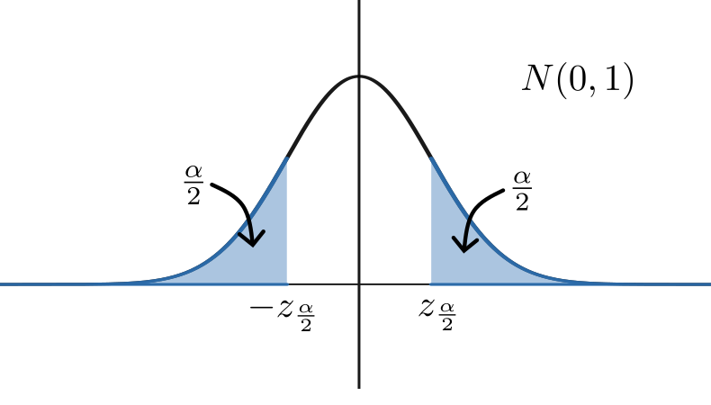

4.2 \(z\) and \(t\) test
4.2.1 \(z-\)test: Population is \(N(\mu, \sigma^2)\) and \(\mu\) unknown
Suppose - \(X_1, X_2, \ldots, X_{n} \overset{\mathrm{iid}}{\sim} N(\mu, \sigma^2)\) where \(\sigma\) is known but \(\mu\) is unknown.
Let \(\mu \in \mathcal{P} = \mathbb{R}\)
Hypothesis: \(\mu = c \ \text{,i.e.,} \ \ \mathcal{P} = \{c\} \subset \mathcal{P}\)
Intuitive test statistic: \(\overline{X}\) is the estimator of \(\mu = c\)
Naive test
Check if \(\overline{X} = c\). Say “\(\overline{X}\) is close to \(c\)”(depends on \(\sigma\)). Is there a better approach with \(\overline{X}?\)
Exercise 4.2 \(\overline{X} \sim N\left(c, \frac{\sigma^2}{n}\right)\) if \(\mu = c\) ,i.e., hypothesis is true.
which would result, \(\sqrt{n}\left(\frac{\overline{X}-c}{\sigma}\right) \sim N(0,1)\) Another way to express “if” statement: If \(Y_1, Y_2, \ldots, Y_{n} \overset{\mathrm{iid}}{\sim} N(c, \sigma^2)\) then \(\sqrt{n}\left(\frac{\overline{Y}-c}{\sigma}\right) \sim N(0,1)\)
Here \(Y_i\)’s are hypothetical random variables and \(N(c, \sigma^2)\) is called “Null distribution”
Computing, \[\begin{equation} \mathbb{P}\left(\frac{\sqrt{n}(\overline{Y}-c)}{\sigma} \geq \frac{\sqrt{n}(\overline{X}-c)}{\sigma}\right) \tag{*} \end{equation}\] allows us to compute,
Hypothesis 4.1 \(H_0: \mu = c\) vs \(H_A: \mu > c\)
The \(p-\)value is the value of \((*)\)
Fix \(\alpha \in (0,1)\) (level of significance).
If \(p-\)value \(< \alpha\) then reject the null hypothesis \(\mu = c\) in favour of alternate \(\mu > c\).
If \(p-\)value \(\geq \alpha\) then there is no evidence to reject the null hypothesis \(\mu = c\) in favour of alternate \(\mu > c\).
Exercise 4.3 Device a computation/test of the following:
- \(H_0: \mu = c\) vs \(H_A: \mu < c\)
- \(H_0: \mu = c\) vs \(H_A: \mu \not= c\)
Hint: Suitably alter the computation \(\mathbb{P}\left(\frac{\sqrt{n}(\overline{Y}-c)}{\sigma} \geq \frac{\sqrt{n}(\overline{X}-c)}{\sigma}\right)\)
Proportions
Let \(X_1, X_2, \ldots, X_{n} \overset{\mathrm{iid}}{\sim} Ber(p)\) random variables
and, we want to test: \(H_0: p=0.5\) vs \(H_A: p \not= 0.5\)
Using Binomial Central Limit Theorem you get that, \[ \frac{\sqrt{n}(\overline{X}-p)}{\sqrt{p(1-p)}} \overset{d}{\to} Z \sim N(0, 1) \]
In R, there is an inbuilt function prop.test() with which you can do \(z-\)test.
prop.test(43, 100)
#>
#> 1-sample proportions test with continuity correction
#>
#> data: 43 out of 100, null probability 0.5
#> X-squared = 1.69, df = 1, p-value = 0.1936
#> alternative hypothesis: true p is not equal to 0.5
#> 95 percent confidence interval:
#> 0.3326536 0.5327873
#> sample estimates:
#> p
#> 0.43prop.test() does the following:
- Computes \(\mathbb{P}\left( \left| Z - 0.5 \right| \geq \left| \frac{\sqrt{n}(\overline{X}-0.5)}{\sqrt{0.5(1-0.5)}} - 0.5 \right| \right)\) towards \(p-\)value.
- Finds \(100(1-\alpha)\% -\)confidence interval by finding the region of \(p\) where, \[ \left| \frac{\sqrt{n}(\overline{X}-p)}{\sqrt{p(1-p)}} \right| < z_{\frac{\alpha}{2}} \text{ with } \mathbb{P}\left( Z > z_{\frac{\alpha}{2}} \right) = \frac{\alpha}{2} \] 
You can also write code for \(z-\)test and Confidence Interval for a data x:
z_test_ci <- function(x, mu = 0, sigma = 1, alpha = 0.95) {
z_statistic <- qnorm((1 - alpha) / 2, lower.tail = FALSE)
sd_x <- sigma / sqrt(length(x))
p_value <- pnorm((mean(x) - mu) / sd_x, lower.tail = FALSE)
print(paste0(
100 * alpha,
"% Confidence Interval: (",
mean(x) - z_statistic * sd_x,
", ",
mean(x) + z_statistic * sd_x,
")"
))
print(paste0("p-value: ", p_value))
}4.2.2 \(t-\)test: Test for sample mean when variance is unknown
Assume \(X \sim N(\mu, \sigma^2)\) & both \(\mu\) and \(\sigma\) are unknown. Let \(X_1, X_2, \ldots, X_{n} \overset{\mathrm{iid}}{\sim} N(\mu, \sigma^2)\)
Hypothesis 4.2 \(H_0: \mu=c\) vs \(H_A: \mu < c\)
Let \(Y_1, Y_2, \ldots, Y_{n}\) be random variables that “mimic” the sampling procedure: \(Y \sim N(c, s^2)\)
Under, \(H_0\) ,i.e., assume \(\mu = c\) \[ \sqrt{n}\left(\frac{\overline{Y}-c}{S} \right) \sim t_{n-1} \]
\[\begin{align*} &\mathbb{P}({\overline{Y}} < \overline{X}) \\ & = \mathbb{P}\left(\frac{\sqrt{n}(\overline{Y}-c)}{S} < \frac{\sqrt{n}(\overline{X}-c)}{S}\right) \\ & = \mathbb{P}\left(T < \frac{\sqrt{n}(\overline{X}-c)}{S}\right) = ? \end{align*}\] where \(T \sim t_{n-1}\)
Fix \(\alpha \in (0,1)\). If \(\mathbb{P}\left(T < \frac{\sqrt{n}(\overline{X}-c)}{S}\right) < \alpha\) then reject \(H_0\)
Exercise 4.4 Prescribe the \(t-\)test when
- \(H_0: \mu = c\) vs \(H_A: \mu < c\)
- \(H_0: \mu = c\) vs \(H_A: \mu \not= c\)
There is an inbuilt function t.test() in R for \(t-\)test:
4.2.3 Applications
Suppose one needs to compare two populations.
4.2.3.1 Test for equality of mean, when variance is known
Assume that \[\begin{align*} X &\sim N(\mu_1, \sigma_1^2) \\ Y &\sim N(\mu_2, \sigma_2^2) \end{align*}\] where both \(\sigma_1\) and \(\sigma_2\) are known.
Hypothesis 4.3
\(H_0: \mu_1 = \mu_2\) vs \(H_A: \mu_1 \not= \mu_2\)
which is equivalent to,
\(H_0: \mu_1 - \mu_2 = 0\) vs \(H_A: \mu_1 - \mu_2 \not= 0\)
So you take \({\rm iid}\) samples, \(X_1, X_2, \ldots, X_{n_1}\) from \(X\) and \(Y_1, Y_2, \ldots, Y_{n_2}\) from \(Y\)
Intuitively, you might want to check \(\overline{X} - \overline{Y}\) is close to \(0\) or not.
Under the assumptions: \[ \overline{X} - \overline{Y} \sim N \left(\mu_1-\mu_2, \frac{\sigma_1^2}{n_1} + \frac{\sigma_2^2}{n_2} \right) \] Now, \(Z \sim N(0,1)\) Fix, \(\alpha \in (0,1)\). If \[ \mathbb{P}\left( |Z| \geq \frac{ \left|\overline{X} - \overline{Y} \right| }{\sqrt{\frac{\sigma_1^2}{n_1} + \frac{\sigma_2^2}{n_2} }} \right) < \alpha \] reject \(H_0\).
4.2.3.2 Test for proportions when variance is unknown
Assume that, we have 2 coins with \(p_1\) and \(p_2\) probability of heads
Hypothesis 4.3 \(H_0: p_1 = p_2\) vs \(H_A: p_1 \not= p_2\)
You sample, \(X_1, X_2, \ldots, X_{n} \overset{\mathrm{iid}}{\sim} Ber(p_1)\) and \(Y_1, Y_2, \ldots, Y_{n} \overset{\mathrm{iid}}{\sim} Ber(p_2)\) by tossing the coins.
Let, \[ \hat{p_1} = \overline{X} \text{ and } \hat{p_2} = \overline{Y} \]
you have the test-statistic: \[ \frac{\hat{p_1} - \hat{p_2}}{\sqrt{\frac{2\hat{p}(1-\hat{p})}{n}}} \] with \(\hat{p} = \frac{\hat{p_1} + \hat{p_2}}{2}\). Here, \(\frac{2\hat{p}(1-\hat{p})}{n}\) is known as Pooled variance